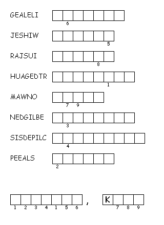

This week's lessons:2 Samuel 1:1, 1:17-27 and Psalm 130, or Wisdom of Solomon 1:13-15, 2:23-24 and [Lamentations 3:23-33 or Psalm30], 2 Corinthians 8:7-15, Mark 5:21-43
Elementary School Pew-work
Listen carefully to the Gospel, and then answer these questions:
1. Where was Jesus?
__________________________________________________________________________
2. Who asked Jesus for help?
__________________________________________________________________________
3. Who didn't ask Jesus for help?
__________________________________________________________________________
4. What did the woman do?
__________________________________________________________________________
5. Whom did Jesus heal?
__________________________________________________________________________
|
 |
|---|
Next Week: Next Week: 2 Samuel 5:1-5, 9-10 and Psalm 48, or Ezekiel 2:1-5 and Psalm 123, 2 Corinthians 12:2-10, Mark 6:1-13